library(targets)
library(ggplot2)
library(tidyverse)
library(tidybayes)Simulating roos of known age! They have some variation in their growth rates
## same max size
## no environmental variation
## differences in growth rate
vb_growth <- function(time, r, Lmax){
Lmax * (1 - exp(-r*time))
}
curve(vb_growth(x, 0.3, 50), xlim = c(0, 13))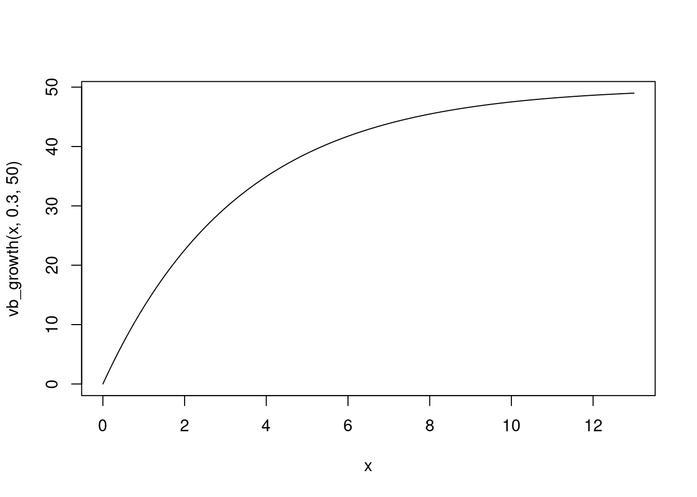
roos with different growth rates
roo_gr <- runif(34, 0.2, 0.4)
expand_grid(
roo_id = 1:34,
age = 0:12
) |>
mutate(roo_gr = roo_gr[roo_id],
leg =vb_growth(time = age, r = roo_gr, Lmax = 50)) |>
ggplot(aes(x = age, y = leg, group = roo_id))+
geom_line()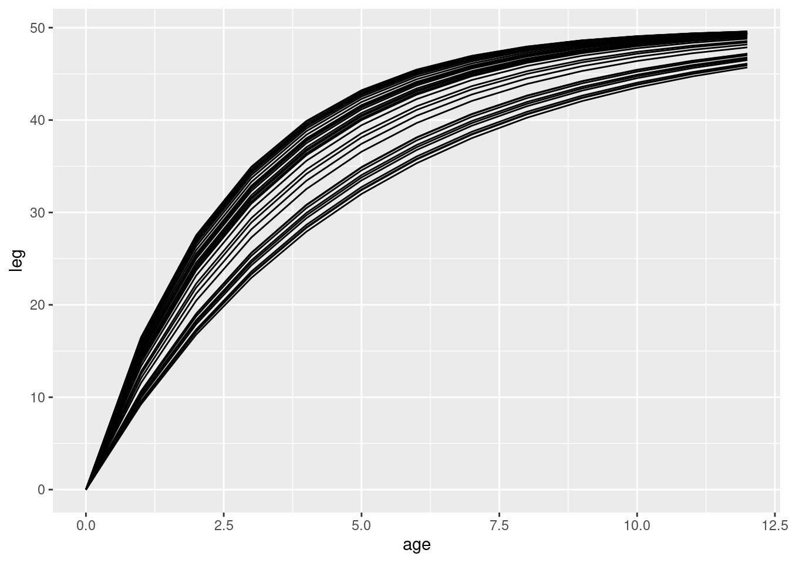
Imagine this same process but tracking multiple cohorts at once, all still living to exactly 12 years old
## number of cohorts
n_cohorts <- 14
## roos per year
roos_per_year <- 25
## total roos
n_roos <- n_cohorts * roos_per_year
roo_gr <- rep(.31, times = n_roos) #runif(n_roos, 0.2, 0.4)
cohort_grow <- tibble(
roo_id = 1:n_roos,
cohort_id = rep(1:n_cohorts, each = roos_per_year)
) |>
expand_grid(age = 0:12) |>
mutate(roo_gr = roo_gr[roo_id],
leg =vb_growth(time = age, r = roo_gr, Lmax = 50),
year = 2000 + cohort_id + age)
cohort_grow |> #View()
ggplot(aes(x = year, y = leg, group = roo_id)) + geom_line(alpha = .3)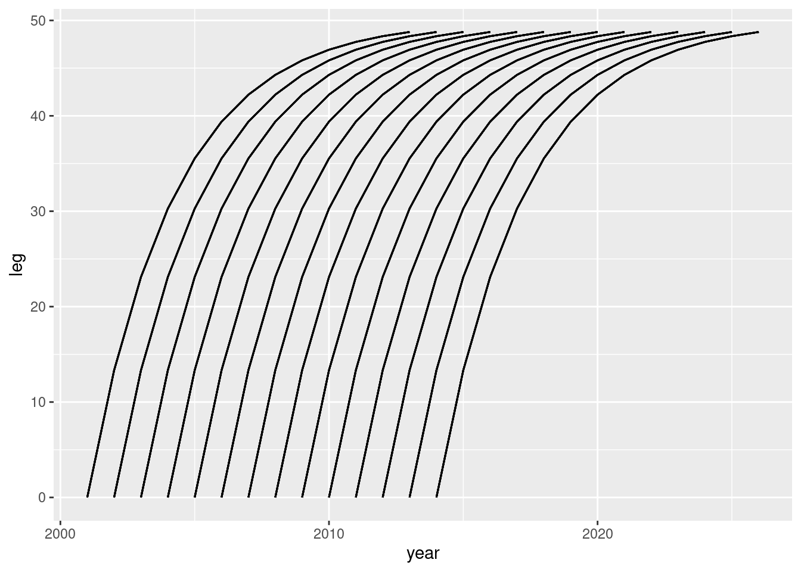
sampling and “forgetting” some of them. Not counting babies, young of the year.
roos_2010 <- cohort_grow |>
filter(year == 2010)#,
# leg > 0)
roos_2010 |>
ggplot(aes(x = leg)) +
geom_histogram()`stat_bin()` using `bins = 30`. Pick better value with `binwidth`.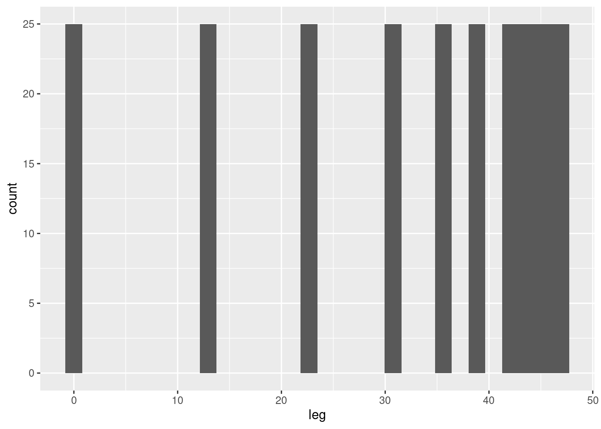
These are all the roos AVAILABLE to be caught in 2010
We only get to catch 80% of them
roos_2010$roo_id |> n_distinct()[1] 250## only catch 80%, every year, independent of whether or not they have ever been caught before
roos_tagged <- cohort_grow |>
mutate(is_caught = rbinom(length(roo_id), prob = .7, size = 1)) |>
# filter for a year when there were roos of every size in this example
filter(year >=2009,
year < 2014)
roos_tagged |>
ggplot(aes(x = year, y = leg, group = roo_id)) +# geom_line(alpha = .3) +
geom_point(aes(colour = is_caught), position = position_jitter(width = .1))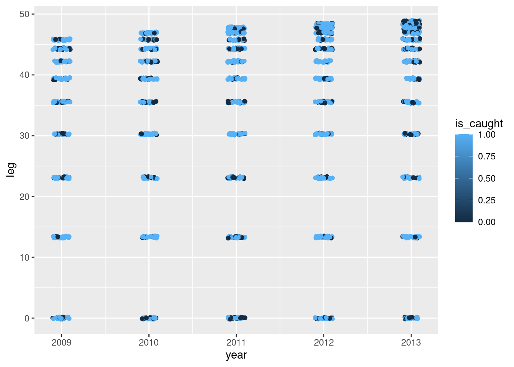
This is a simple simulation of how the data look in the real world.
Should the smallest roos have a nonzero value for the length?
We only observe roos if they are caught!
Roos 2 yo or younger are identified with age roos older than that are NOT
roos_observed <- roos_tagged |>
filter(is_caught == 1) |>
mutate(leg_meas = rnorm(length(leg), mean = leg, sd = .5)) |>
group_by(roo_id) |>
mutate(age_at_capture = if_else(min(age)<3, min(age), false = NA),
time_since_capture = year - min(year))##
roos_observed |>
ggplot(aes(x = time_since_capture, y = leg_meas, group = roo_id)) + geom_line() +
facet_wrap(~age_at_capture)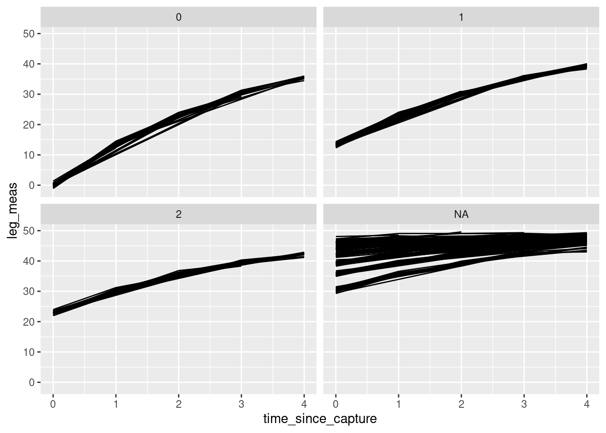
library(cmdstanr)This is cmdstanr version 0.7.1- CmdStanR documentation and vignettes: mc-stan.org/cmdstanr- CmdStan path: /home/andrew/software/cmdstan- CmdStan version: 2.34.1roo_age <- cmdstan_model(here::here("posts/2024-03-13-guessing-age/roo_age.stan"))
roo_agedata {
int n;
int nroo;
vector[n] leg;
vector[n] time_since_capture;
array[n] int<lower=1, upper=nroo> roo_id;
int n_known_age;
int n_unk_age;
vector[n_known_age] age_at_capture;
array[n_unk_age] int<lower=1, upper=nroo> ii_unobs;
array[n_known_age] int<lower=1, upper=nroo> ii_known;
}
parameters {
vector<lower=2>[n_unk_age] t0_param;
vector<lower=0,upper=1>[nroo] r;
real Lmax;
real<lower=0> sigma_meas;
}
transformed parameters {
vector[nroo] t0;
t0[ii_known] = age_at_capture;
t0[ii_unobs] = t0_param;
}
model {
sigma_meas ~ exponential(1);
Lmax ~ normal(500, 50);
r ~ beta(.3*5, (1-.3)*5);
t0_param ~ uniform(2,10);
leg ~ normal(Lmax * (1 - exp(-r[roo_id] .* (time_since_capture + t0[roo_id]))), sigma_meas);
}## observed roo_id might not be identical to the TRUE roo_id, since its possible that I simulated a roo that never got sampled even once! This will cause a porblem with the indexing, because I'm using the roo_id also as a way to index into the vector of roo-level parameters (t0 and r)
roos_observed$roo_id_obs <- as.numeric(as.factor(roos_observed$roo_id))
roo_obs_ages <- roos_observed |>
group_by(roo_id_obs) |>
summarize(age_at_capture = unique(age_at_capture),
true_age_at_capture = min(age),
# original ID which doesn't need to be the one used in the model
roo_id = unique(roo_id)) |>
ungroup() |>
arrange(roo_id_obs)
# get the data together
roo_data <- list(n = length(roos_observed$roo_id_obs),
nroo = max(roos_observed$roo_id_obs),
leg = roos_observed$leg,
time_since_capture = roos_observed$time_since_capture,
roo_id = roos_observed$roo_id_obs,
n_known_age = sum(!is.na(roo_obs_ages$age_at_capture)),
ii_known = which(!is.na(roo_obs_ages$age_at_capture)),
n_unk_age = sum(is.na(roo_obs_ages$age_at_capture)),
ii_unobs = which(is.na(roo_obs_ages$age_at_capture)),
age_at_capture = roo_obs_ages$age_at_capture[which(!is.na(roo_obs_ages$age_at_capture))]
)
roo_age_post <- roo_age$sample(data = roo_data,
parallel_chains = 4,
refresh = 0)Running MCMC with 4 parallel chains...
Chain 4 finished in 2.0 seconds.
Chain 2 finished in 2.1 seconds.
Chain 3 finished in 2.2 seconds.
Chain 1 finished in 2.9 seconds.
All 4 chains finished successfully.
Mean chain execution time: 2.3 seconds.
Total execution time: 3.0 seconds.How did we do?
growth rates
roo_age_post |>
gather_rvars(r[roo])# A tibble: 310 × 3
roo .variable .value
<int> <chr> <rvar[1d]>
1 1 r 0.47 ± 0.178
2 2 r 0.46 ± 0.090
3 3 r 0.64 ± 0.270
4 4 r 0.42 ± 0.174
5 5 r 0.68 ± 0.134
6 6 r 0.53 ± 0.096
7 7 r 0.46 ± 0.197
8 8 r 0.59 ± 0.204
9 9 r 0.57 ± 0.134
10 10 r 0.65 ± 0.152
# ℹ 300 more rowsgrowth rate is consistently an underestimate! Why is that.
t0_roos <- gather_rvars(
roo_age_post,
t0_param[roo_id_obs_post])
length(roo_data$ii_unobs)[1] 155## pull out the true ages using the subscripts
roo_obs_ages[roo_data$ii_unobs,] |>
bind_cols(t0_roos) |>
ggplot(aes(x = true_age_at_capture, dist = .value)) +
stat_pointinterval()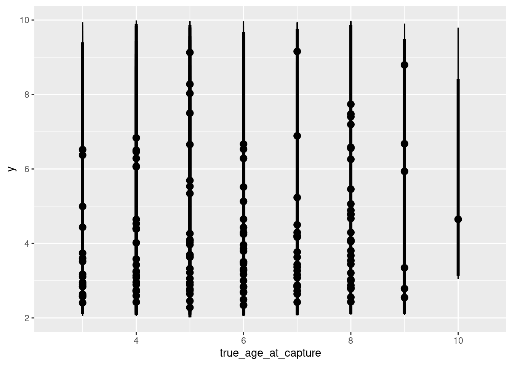
roos_observed |> glimpse()Rows: 981
Columns: 11
Groups: roo_id [310]
$ roo_id <int> 1, 1, 1, 1, 2, 2, 3, 3, 3, 3, 4, 4, 4, 5, 5, 5, 6, …
$ cohort_id <int> 1, 1, 1, 1, 1, 1, 1, 1, 1, 1, 1, 1, 1, 1, 1, 1, 1, …
$ age <int> 8, 9, 10, 12, 9, 10, 9, 10, 11, 12, 8, 10, 11, 9, 1…
$ roo_gr <dbl> 0.31, 0.31, 0.31, 0.31, 0.31, 0.31, 0.31, 0.31, 0.3…
$ leg <dbl> 45.81284, 46.92894, 47.74754, 48.78830, 46.92894, 4…
$ year <dbl> 2009, 2010, 2011, 2013, 2010, 2011, 2010, 2011, 201…
$ is_caught <int> 1, 1, 1, 1, 1, 1, 1, 1, 1, 1, 1, 1, 1, 1, 1, 1, 1, …
$ leg_meas <dbl> 45.26342, 46.31263, 47.51444, 49.13035, 46.53499, 4…
$ age_at_capture <int> NA, NA, NA, NA, NA, NA, NA, NA, NA, NA, NA, NA, NA,…
$ time_since_capture <dbl> 0, 1, 2, 4, 0, 1, 0, 1, 2, 3, 0, 2, 3, 0, 1, 3, 0, …
$ roo_id_obs <dbl> 1, 1, 1, 1, 2, 2, 3, 3, 3, 3, 4, 4, 4, 5, 5, 5, 6, …roos_observed# A tibble: 981 × 11
# Groups: roo_id [310]
roo_id cohort_id age roo_gr leg year is_caught leg_meas age_at_capture
<int> <int> <int> <dbl> <dbl> <dbl> <int> <dbl> <int>
1 1 1 8 0.31 45.8 2009 1 45.3 NA
2 1 1 9 0.31 46.9 2010 1 46.3 NA
3 1 1 10 0.31 47.7 2011 1 47.5 NA
4 1 1 12 0.31 48.8 2013 1 49.1 NA
5 2 1 9 0.31 46.9 2010 1 46.5 NA
6 2 1 10 0.31 47.7 2011 1 48.0 NA
7 3 1 9 0.31 46.9 2010 1 47.2 NA
8 3 1 10 0.31 47.7 2011 1 47.8 NA
9 3 1 11 0.31 48.3 2012 1 49.1 NA
10 3 1 12 0.31 48.8 2013 1 49.3 NA
# ℹ 971 more rows
# ℹ 2 more variables: time_since_capture <dbl>, roo_id_obs <dbl>Back to the drawing board
Simulate one roo and fit a simple model to it
time <- 0:13
one_roo_mean <- vb_growth(time = time, r = .3, Lmax = 50)
one_roo_obs <- rnorm(
n = length(one_roo_mean),
mean = one_roo_mean,
sd = 1)
plot(time, one_roo_obs)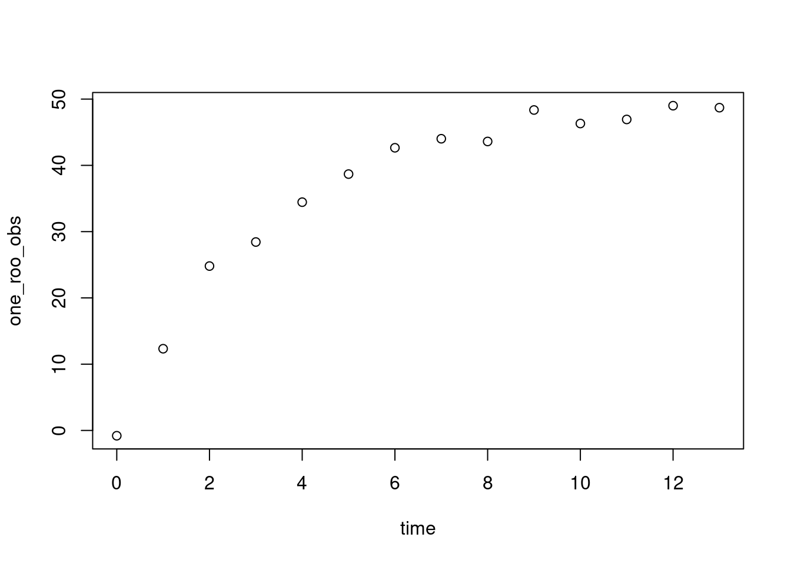
one_roo_age <- cmdstan_model(stan_file = , here::here("posts/2024-03-13-guessing-age/one_roo_age.stan"))
one_roo_agedata {
int n;
vector[n] leg;
vector[n] time_since_capture;
real age_at_capture;
}
parameters {
real<lower=0,upper=1> r;
real Lmax;
real<lower=0> sigma_meas;
}
model {
r ~ beta(.3*5, (1-.3)*5);
Lmax ~ normal(50, 10);
sigma_meas ~ exponential(1);
leg ~ normal(Lmax * (1 - exp(-r * (time_since_capture + age_at_capture))), sigma_meas);
}
generated quantities {
vector[n] pred_leg;
for (i in 1:n){
pred_leg[i] = normal_rng(Lmax * (1 - exp(-r * (time_since_capture[i] + age_at_capture))), sigma_meas);
}
}one_roo_age_post <- one_roo_age$sample(data = list(
n = length(time),
leg = one_roo_obs,
time_since_capture = time,
age_at_capture = 0),
refresh = 0
)Running MCMC with 4 sequential chains...
Chain 1 finished in 0.0 seconds.Chain 2 Informational Message: The current Metropolis proposal is about to be rejected because of the following issue:Chain 2 Exception: normal_lpdf: Scale parameter is 0, but must be positive! (in '/tmp/RtmpzquOEM/model-4fd947767b294.stan', line 17, column 2 to column 89)Chain 2 If this warning occurs sporadically, such as for highly constrained variable types like covariance matrices, then the sampler is fine,Chain 2 but if this warning occurs often then your model may be either severely ill-conditioned or misspecified.Chain 2 Chain 2 finished in 0.0 seconds.
Chain 3 finished in 0.0 seconds.
Chain 4 finished in 0.0 seconds.
All 4 chains finished successfully.
Mean chain execution time: 0.0 seconds.
Total execution time: 0.5 seconds.one_roo_age_post |>
spread_rvars(pred_leg[time]) |>
ggplot(aes(x = time-1, dist = pred_leg)) +
stat_lineribbon() +
scale_fill_brewer(palette = "Greens", direction = -1) +
geom_point(aes(x = time, y = leg),
data = tibble(time, leg = one_roo_obs),
size = 4,
inherit.aes = FALSE, pch = 21, fill = "orange")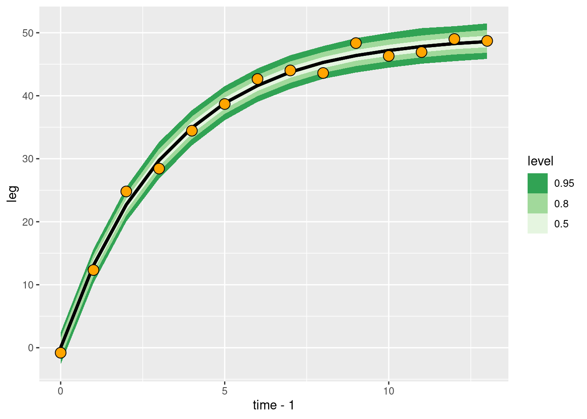
curve(500 * (1 - exp(-.3*x)), xlim = c(0, 13))
curve(500 * (1 - exp(-.3*(x - 2))), xlim = c(0, 13), add = TRUE)
curve(500 * (1 - exp(-.3*(x + 5))), xlim = c(0, 13), add = TRUE)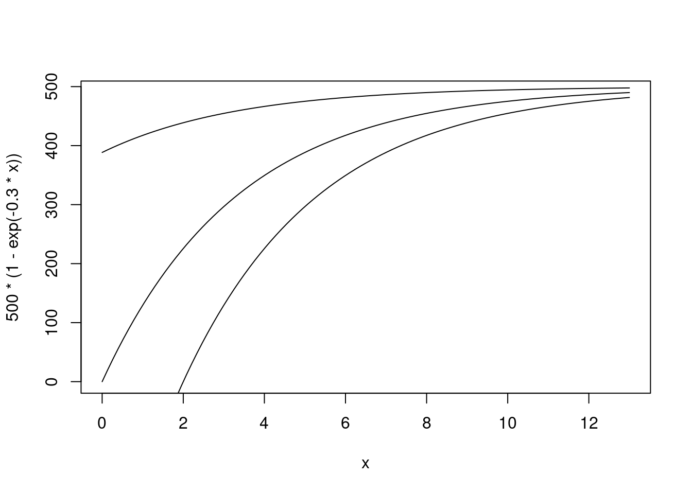
now try later in life
time <- 0:13
## remove the first 3 years of life
time_late <- time[-(1:3)]
age_when_obs <- min(time_late)
time_since_obs <- time_late - age_when_obs
one_roo_mean <- vb_growth(time = time, r = .3, Lmax = 50)
one_roo_obs <- rnorm(
n = length(one_roo_mean),
mean = one_roo_mean,
sd = 1)
one_roo_obs_late <- one_roo_obs[-(1:3)]
plot(time_since_obs, one_roo_obs_late, ylim = c(0, 55), xlim = c(-3, 10))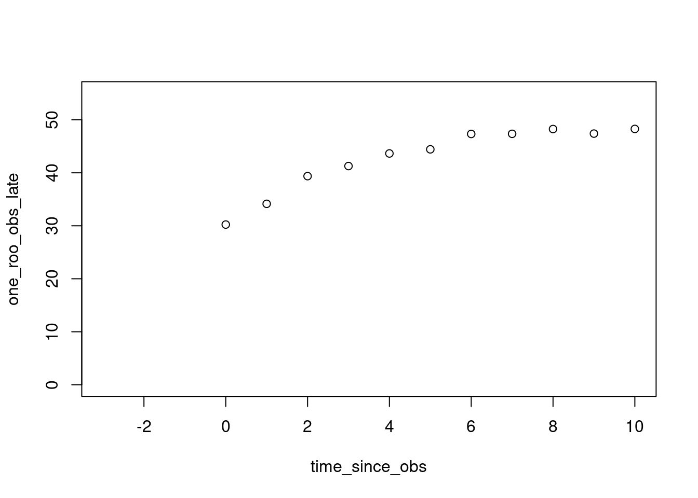
one_roo_age_post <- one_roo_age$sample(data = list(
n = length(time_since_obs),
leg = one_roo_obs_late,
time_since_capture = time_since_obs,
age_at_capture = age_when_obs),
refresh = 0
)Running MCMC with 4 sequential chains...
Chain 1 finished in 0.0 seconds.
Chain 2 finished in 0.0 seconds.
Chain 3 finished in 0.0 seconds.
Chain 4 finished in 0.0 seconds.
All 4 chains finished successfully.
Mean chain execution time: 0.0 seconds.
Total execution time: 0.5 seconds.one_roo_age_post |>
spread_rvars(pred_leg[time]) |>
ggplot(aes(x = time_since_obs, dist = pred_leg)) +
stat_lineribbon() +
scale_fill_brewer(palette = "Greens", direction = -1) +
geom_point(aes(x = time, y = leg),
data = tibble(time = time_since_obs, leg = one_roo_obs_late),
size = 4,
inherit.aes = FALSE, pch = 21, fill = "orange")if we know the age at the start
now try with unknown age
one_roo_age_unk <- cmdstan_model(stan_file = , here::here("posts/2024-03-13-guessing-age/one_roo_age_unk.stan"))
one_roo_age_unkdata {
int n;
vector[n] leg;
vector[n] time_since_capture;
}
parameters {
real<lower=0,upper=1> r;
real Lmax;
real<lower=0> sigma_meas;
real<lower=0> age_at_capture;
}
model {
sigma_meas ~ exponential(1);
Lmax ~ normal(50, 10);
r ~ beta(.3*5, (1-.3)*5);
age_at_capture ~ normal(3, 1);
leg ~ normal(Lmax * (1 - exp(-r * (time_since_capture + age_at_capture))), sigma_meas);
}
generated quantities {
vector[n] pred_leg;
for (i in 1:n){
pred_leg[i] = normal_rng(Lmax * (1 - exp(-r * (time_since_capture[i] + age_at_capture))), sigma_meas);
}
}one_roo_age_unk_post <- one_roo_age_unk$sample(data = list(
n = length(time_since_obs),
leg = one_roo_obs_late,
time_since_capture = time_since_obs,
age_at_capture = age_when_obs),
refresh = 0)Running MCMC with 4 sequential chains...
Chain 1 finished in 0.1 seconds.
Chain 2 finished in 0.1 seconds.
Chain 3 finished in 0.1 seconds.
Chain 4 finished in 0.1 seconds.
All 4 chains finished successfully.
Mean chain execution time: 0.1 seconds.
Total execution time: 0.5 seconds.one_roo_age_unk_post |>
spread_rvars(pred_leg[time]) |>
ggplot(aes(x = time-1, dist = pred_leg)) +
stat_lineribbon() +
scale_fill_brewer(palette = "Greens", direction = -1) +
geom_point(aes(x = time, y = leg), tibble(time = time_since_obs, leg = one_roo_obs_late),
inherit.aes = FALSE, pch = 21, fill = "orange")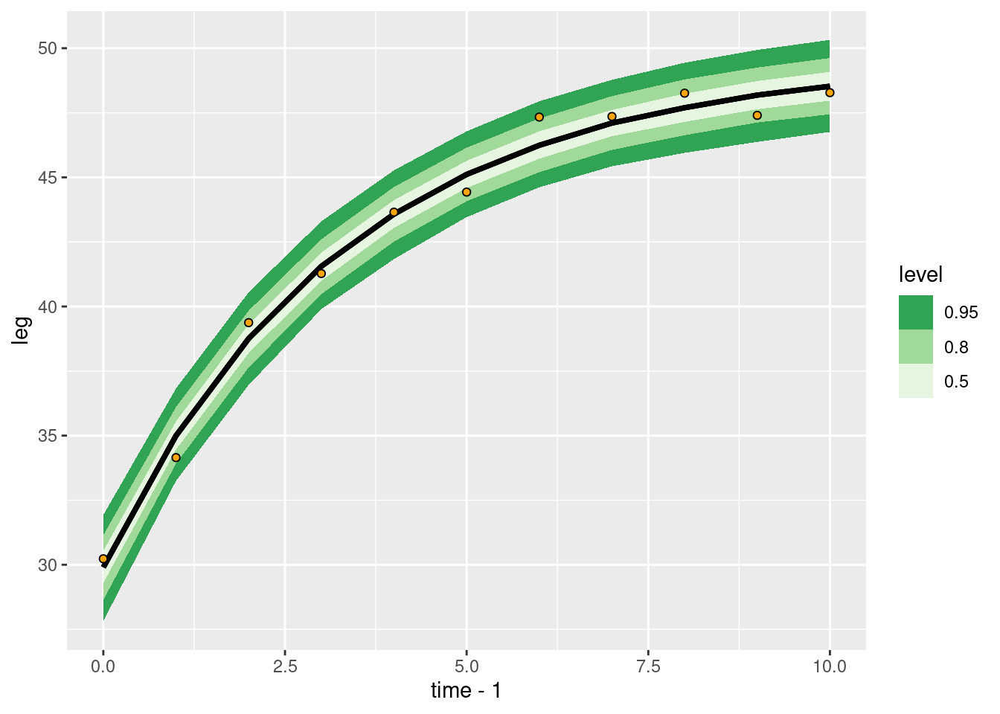
one_roo_age_unk_post variable mean median sd mad q5 q95 rhat ess_bulk ess_tail
lp__ -5.20 -4.86 1.62 1.42 -8.34 -3.31 1.00 1137 1442
r 0.30 0.30 0.03 0.03 0.25 0.35 1.01 1034 1068
Lmax 49.57 49.53 0.74 0.66 48.46 50.83 1.01 1102 1151
sigma_meas 0.77 0.73 0.21 0.18 0.51 1.17 1.00 1334 1454
age_at_capture 3.12 3.10 0.35 0.33 2.60 3.72 1.00 1126 1449
pred_leg[1] 29.90 29.90 1.02 0.92 28.21 31.56 1.00 2852 2950
pred_leg[2] 35.01 35.00 0.90 0.81 33.54 36.50 1.00 3914 3365
pred_leg[3] 38.75 38.76 0.90 0.82 37.28 40.19 1.00 3699 3457
pred_leg[4] 41.55 41.56 0.88 0.81 40.18 42.97 1.00 3156 3299
pred_leg[5] 43.58 43.58 0.87 0.80 42.18 44.95 1.00 3596 3582
# showing 10 of 16 rows (change via 'max_rows' argument or 'cmdstanr_max_rows' option)Start size
this could also be done with start size, asking what size is a roo at the end of the first year? this would be the first time measurement of each animal. to estimate age in the case where starting with start size, I would work on the log scale. then I would just go back 10 years (an oldish roo) from first measuremnet for every roo of unknown age. at every age past the first 2 (becuase these wld be young roos already measured) I would measure the probability of this roo happening on the start_size distribution.